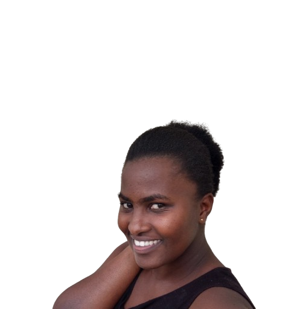

About Me

COMPUTER SCIENTIST
I craft digital experiences where design meets functionality.
I am a passionate WITU student who loves combining creativity with technology.
From web design to data science, I enjoy building projects that are both visually engaging and technically strong,
always striving for clarity, polish, and impact.As a web developer,
I turn ideas into clean, responsive, and engaging websites that work seamlessly across devices.